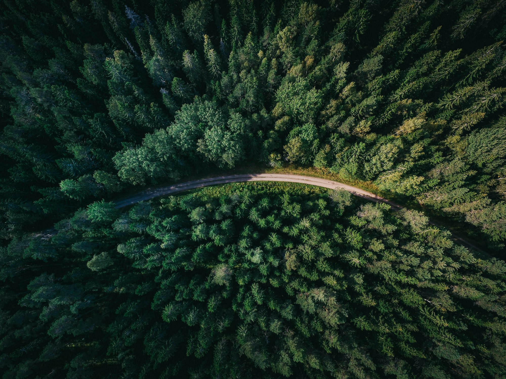
UZMASAT-1 APPLICATIONS
Sustainable Forestry Management
Consult Me Your Solutions Get Your Free Trial NowWith Geospatial AI’s advanced forestry management solutions, we can protect our forests and promote sustainable practices! Our sustainable forestry management solutions leverage geospatial analytics and satellite imagery to uncover insights in the optimisation of forest management practices.
Through better understanding of our uniquely characterised forests, we can promote biodiversity, protect ecosystems, and ensure sustainable resource utilisation.
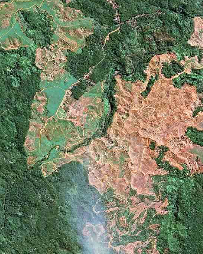
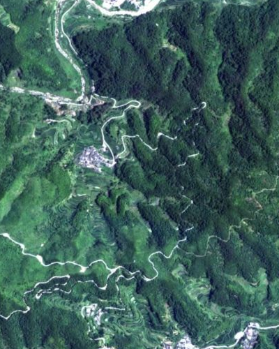
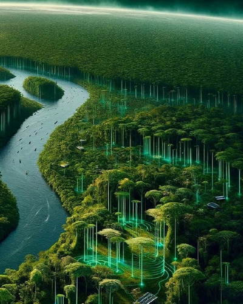
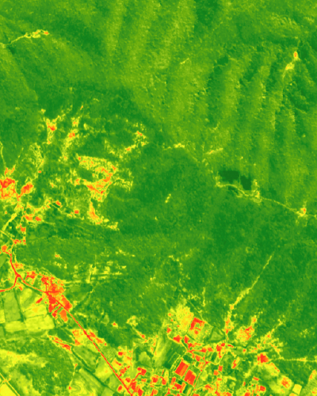
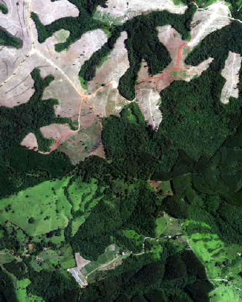
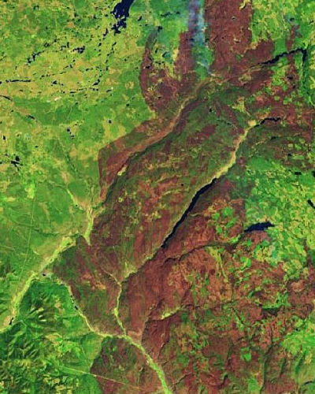
Comprehensive Forest Health Monitoring
Uzma Digital Earth offers advanced satellite-based remote sensing tools to monitor key indicators of forest health, including carbon stock, carbon sequestration, and above-ground biomass.
By accurately assessing these metrics, forest managers can gain insights into the carbon storage capacity of forests and their role in climate change mitigation.
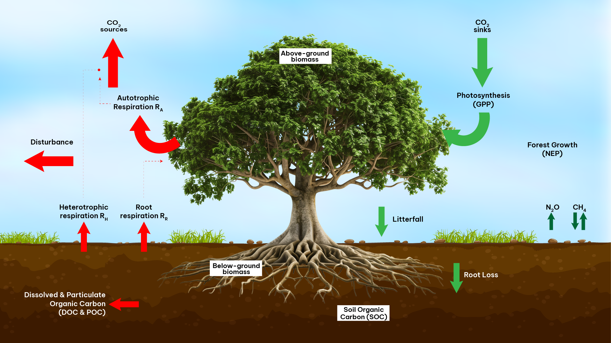
Early Detection of Deforestation and Illegal Logging
High-resolution satellite data enables regular monitoring of forest cover and vegetation density, allowing for early detection of deforestation and illegal logging activities. This capability helps track forest changes over time, ensuring rapid response to potential threats.
Data-Driven Decisions for Sustainable Forest Management
Uzma Digital Earth empowers stakeholders to make informed, data-driven decisions that support sustainable forest management. With these tools, forests can be preserved and managed responsibly, aligning with climate goals and promoting long-term environmental sustainability.
Forest .GAI
Forest Satellite Images for Sustainable Land Use
Forest.GAI offers comprehensive solutions for forestry biomass and carbon stock verification. Sustainable Forestry Management solution utilizes satellite data predictive analytics combined with weather forecast to generate AI-driven insights about forest growth and ultimately making more informed and proactive decisions to the forestry management authority.
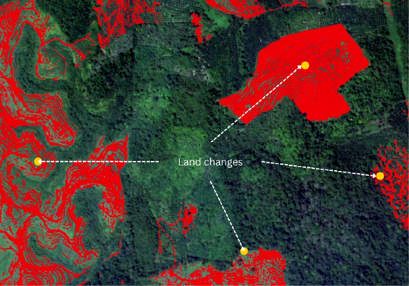
Forestry Inventory and Monitoring
- Forest mapping
- Forest change detection
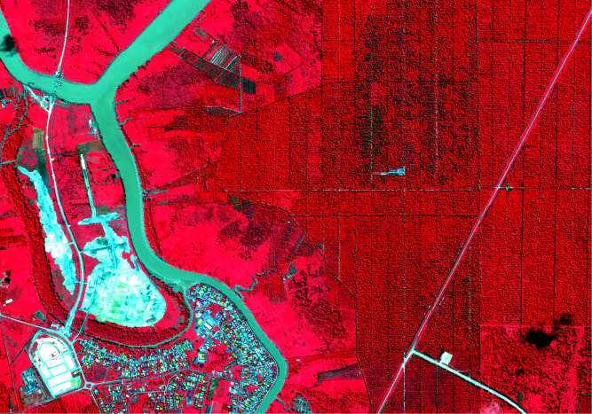
Biodiversity Assessment
- Habitat Mapping
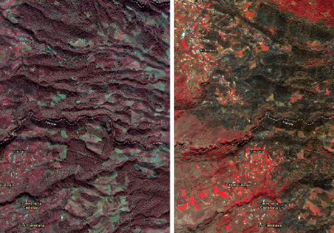
Forest Fire Risk Assessment and Prevention
- Fire Hazard Mapping
- Fire monitoring